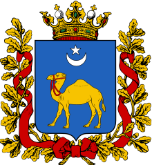
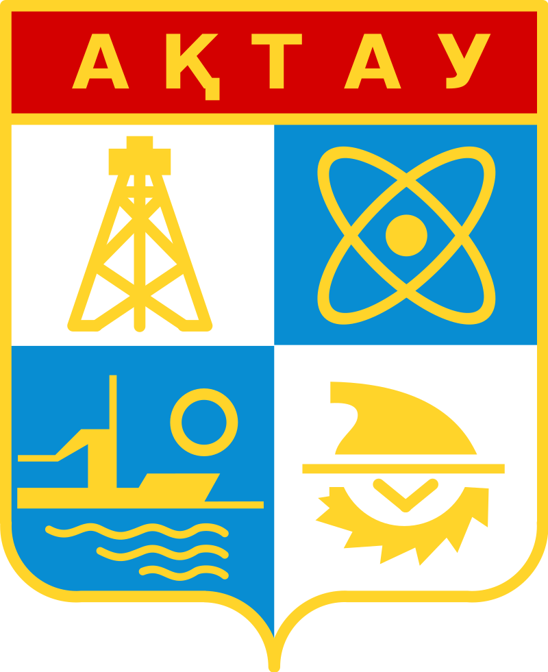
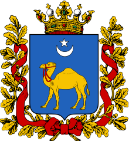
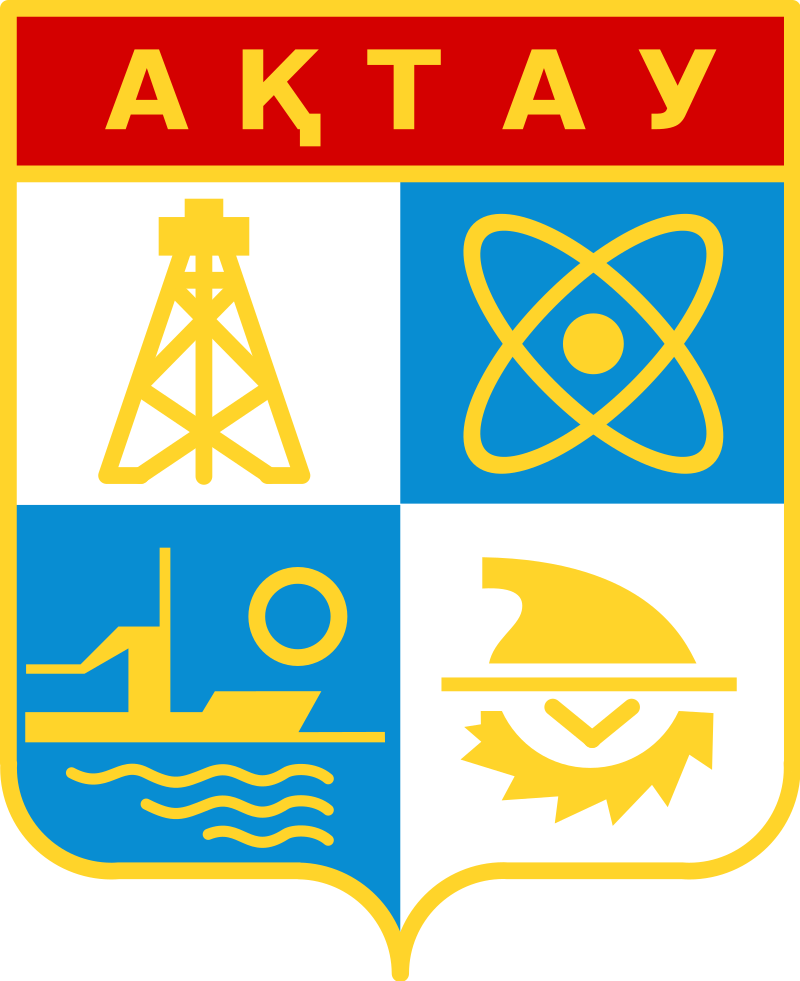

This web-site for travelling in Kazakhstan
Tourism in Kazakhstan is a branch of the country's economy, revenues from which in 2014 amounted to 0.3% of its gross product. By 2020, the government of Kazakhstan will bring this figure to 3%. In 2000, 1.47 million foreign tourists visited Kazakhstan. By 2012, their number had risen to 4.81 million, placing the country 51st among all countries in terms of visits for tourism purposes. The world press describes the tourism industry in the country as developed, despite impressive natural attractions; Poor service and logistics difficulties are cited as factors hindering the flow of tourists.
 


